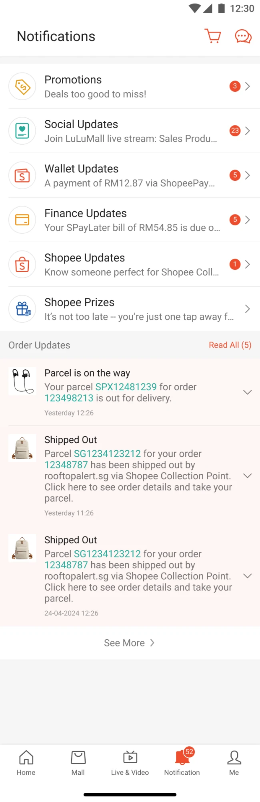
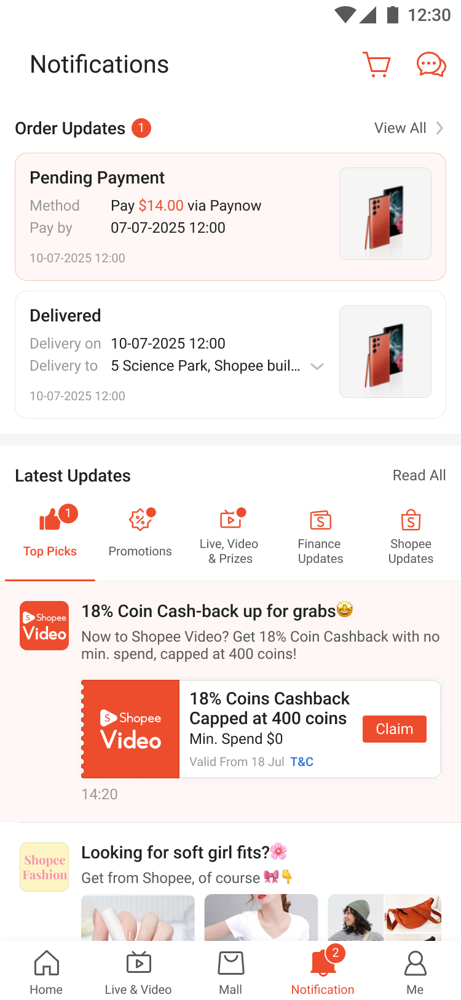

The notifications page had a layout problem that was quietly hurting both users and the business. Order updates were hard to find, non-order promotions were getting ignored, and the folder structure wasn't built to scale. We rethought the whole page.
Shopee's notification page is where users go after they get a push notification. It's a high-traffic surface where people land daily to check order updates, see what promotions are active, and find anything else the app wants to tell them.
The problem was the structure. Notifications were grouped into folders (Orders, Promotions, etc.), but the design made it hard to tell at a glance which folder had new updates. Order status updates, which users care about most, weren't visually surfaced. And the folder tabs weren't built for the new types of content the team wanted to introduce.
Underneath the UX problem was a business problem: the page was underperforming as an engagement surface. Non-order promotional notifications were getting low click-through rates. A large portion of the addressable reach wasn't converting.


The test ran across five Southeast Asian markets. Results varied by market and treatment group; the range below reflects that spread.
The biggest tension in this project was between order utility and promo engagement. These two goals pull in different directions: users want fast order updates, and the business wants promotional reach. We had to sequence the design so we didn't sacrifice one for the other.
If I were starting over, I'd have pushed to run a smaller test earlier. We spent a lot of time debating layout before we had any data. A lightweight A/B on just the order card position would have given us a faster signal and built more internal confidence before the full redesign.
The Top Picks feature was a bet I'm glad we made. It felt like a stretch at the time, adding a discovery surface to a utility page, but the data justified it. AI-powered personalisation on a high-traffic page like this has a surprisingly low bar to clear.